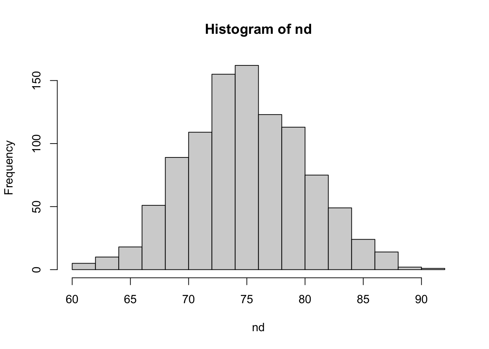
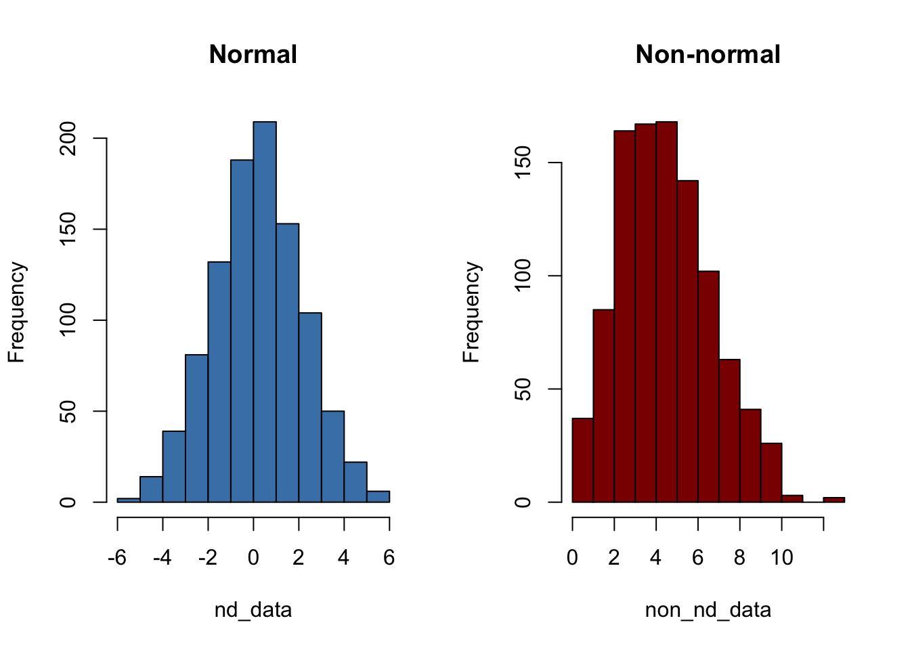
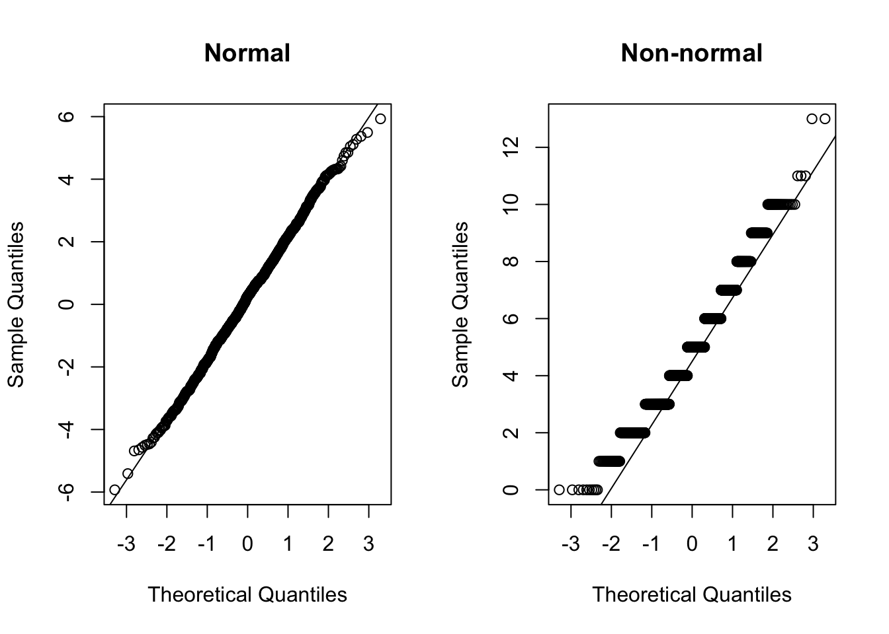

Code
a = sample(1:10, 10, replace = TRUE)
a [1] 9 2 5 4 7 7 4 10 6 1Probability is the branch of mathematics concerning events and numerical descriptions of how likely they are to occur. The probability of an event is a number between 0 and 1; the larger the probability, the more likely an event is to occur.

The sample() function is used to take a random sample from a vector. Here, we are sampling 10 numbers from the sequence 1 to 10. replace = TRUE means that after a number is drawn, it is put back into the pool and can be drawn again.
a = sample(1:10, 10, replace = TRUE)
a [1] 9 2 5 4 7 7 4 10 6 1This code creates a frequency table to show how many times each number was drawn. With a small sample size, the distribution might not be perfectly even.
as.data.frame(table(a)) a Freq
1 1 1
2 2 1
3 4 2
4 5 1
5 6 1
6 7 2
7 9 1
8 10 1By increasing the sample size to 10,000, the law of large numbers suggests that the frequency of each number will be much closer to 10%.
a = sample(1:10, 10000, replace = TRUE)as.data.frame(table(a)) a Freq
1 1 990
2 2 1001
3 3 987
4 4 1013
5 5 961
6 6 1089
7 7 1032
8 8 991
9 9 984
10 10 952
The gtools::permutations() function calculates the number of ways to choose and arrange r items from a set of n items. The formula is n! / (n-r)!.
library(gtools)
all_num = 4
choose = 2
res <- permutations(n = all_num, r = choose, v = 1:all_num)
res [,1] [,2]
[1,] 1 2
[2,] 1 3
[3,] 1 4
[4,] 2 1
[5,] 2 3
[6,] 2 4
[7,] 3 1
[8,] 3 2
[9,] 3 4
[10,] 4 1
[11,] 4 2
[12,] 4 3The number of permutations is 12.
print(nrow(res))[1] 12This can be calculated manually using the formula 4! / (4-2)!.
factorial(4) / factorial(4 - 2)[1] 12The gtools::combinations() function calculates the number of ways to choose r items from a set of n items, where order does not matter. The formula is n! / ((n-r)! * r!).
library(gtools)
all_num = 4
choose = 2
res <- combinations(n = all_num, r = choose, v = 1:all_num)
res [,1] [,2]
[1,] 1 2
[2,] 1 3
[3,] 1 4
[4,] 2 3
[5,] 2 4
[6,] 3 4The number of combinations is 6.
print(nrow(res))[1] 6This can be calculated manually using the formula 4! / ((4-2)! * 2!).
factorial(4) / (factorial(4 - 2) * factorial(2))[1] 6Problem: The probability of any single person snoring is 20%. If there are 4 people in a room, what is the probability that at least one person snores?
p = 0.2
n = 4This method calculates the probability of each case (1, 2, 3, or 4 people snoring) and adds them together.
p0 = (0.8 * 0.8 * 0.8 * 0.8)
p0[1] 0.4096There are 4 possible ways for exactly one person to snore.
p1 = (0.2 * 0.8 * 0.8 * 0.8) * 4
p1[1] 0.4096There are C(4,2) = 6 ways for exactly two people to snore.
factorial(4) / (factorial(4 - 2) * factorial(2))[1] 6p2 = (0.2 * 0.2 * 0.8 * 0.8) * 6
p2[1] 0.1536There are C(4,3) = 4 ways for exactly three people to snore.
factorial(4) / (factorial(4 - 3) * factorial(3))[1] 4p3 = (0.2 * 0.2 * 0.2 * 0.8) * 4
p3[1] 0.0256p4 = (0.2 * 0.2 * 0.2 * 0.2)
p4[1] 0.0016P_at_least_one = p1 + p2 + p3 + p4
P_at_least_one[1] 0.5904This is a more direct method. The complement of “at least one” is “none”.
P_at_least_one2 = 1 - (0.8^4)
P_at_least_one2[1] 0.5904A derangement is a permutation of the elements of a set, such that no element appears in its original position.
The total number of permutations is 4! = 24.
factorial(4)[1] 24The number of derangements D(n) can be approximated by round(n!/e). For n=4, this is D(4) = 9.
e = exp(1) # Use the built-in constant for e
D_4 = round(factorial(4) / e)
D_4[1] 9The probability of a complete derangement is the number of derangements divided by the total number of permutations.
Q1 = D_4 / factorial(4)
Q1[1] 0.375First, choose 1 number to be correct (C(4,1) = 4 ways). Then, find the number of derangements for the remaining 3 numbers (D(3) = 2).
D_3 = round(factorial(3) / e)
D_3[1] 2The total number of ways to get exactly 1 correct is C(4,1) * D(3) = 4 * 2 = 8.
Q2 = (4 * D_3) / factorial(4)
Q2[1] 0.3333333First, choose 2 numbers to be correct (C(4,2) = 6 ways). Then, find the number of derangements for the remaining 2 numbers (D(2) = 1).
D_2 = round(factorial(2) / e)
C_4_2 = factorial(4) / (factorial(2) * factorial(2))
Q3 = (C_4_2 * D_2) / factorial(4)
Q3[1] 0.25This is impossible. If 3 numbers are in their correct positions, the 4th number must also be in its correct position. The number of derangements of 1 item is D(1) = 0.
Q4 = 0
Q4[1] 0There is only one way for this to happen.
Q5 = 1 / factorial(4)
Q5[1] 0.04166667The sum of all probabilities should be 1.
Q1 + Q2 + Q3 + Q4 + Q5[1] 1The binomial distribution models the number of successes in a fixed number of independent trials, each with a binary outcome (success/failure).
In R, the dbinom function calculates the probability of getting exactly x successes. While this is technically a PMF for a discrete distribution, R uses the d prefix convention for both PDF (continuous) and PMF (discrete).
Probability of exactly 1 person snoring:
n = 4 # number of trials (people)
p = 0.2 # probability of success (snoring)
dbinom(x = 1, size = n, prob = p)[1] 0.4096Probabilities for 0, 1, 2, 3, or 4 people snoring:
dbinom(x = c(0, 1, 2, 3, 4), size = n, prob = p)[1] 0.4096 0.4096 0.1536 0.0256 0.0016The pbinom function calculates the cumulative probability of getting q or fewer successes.
Probability of 1 or fewer people snoring:
pbinom(q = 1, size = n, prob = p, lower.tail = TRUE)[1] 0.8192The rbinom function generates random numbers from a binomial distribution.
Generate 10,000 random values from this distribution:
a = rbinom(10000, size = 4, prob = 0.2)
table(a)a
0 1 2 3 4
4071 4166 1490 250 23 A continuous probability distribution characterized by a bell-shaped curve. It is defined by its mean (μ) and standard deviation (σ).
dnorm: Density function (PDF)pnorm: Cumulative distribution function (CDF)qnorm: Quantile function (inverse CDF)rnorm: Random number generationCalculates the height of the probability density function at a given point.
dnorm(0, mean = 1, sd = 2)[1] 0.1760327Calculates the area under the curve to the left of a given value (the probability of observing a value less than or equal to q).
Probability of observing a value <= 70 from a N(75, 5) distribution:
pnorm(q = 70, mean = 75, sd = 5)[1] 0.1586553Finds the value x such that P(X <= x) = p. It is the inverse of the CDF.
Find the 25th percentile (Q1) of a N(75, 5) distribution:
qnorm(p = 0.25, mean = 75, sd = 5)[1] 71.62755Generate 1,000 random numbers from a N(75, 5) distribution and plot a histogram.
nd = rnorm(n = 1000, mean = 75, sd = 5)
hist(nd)
It’s often important to check if a dataset follows a normal distribution.
nd_data = rnorm(n = 1000, mean = 0, sd = 2)
non_nd_data = rpois(n = 1000, lambda = 5) # Poisson data is not normalA bell-shaped histogram suggests normality.
par(mfrow = c(1, 2))
hist(nd_data, col = 'steelblue', main = 'Normal')
hist(non_nd_data, col = 'darkred', main = 'Non-normal')
If the data is normal, the points on a Q-Q plot will fall closely along the straight line.
par(mfrow = c(1, 2))
qqnorm(nd_data, main = 'Normal')
qqline(nd_data)
qqnorm(non_nd_data, main = 'Non-normal')
qqline(non_nd_data)
A statistical test for normality. The null hypothesis (H0) is that the data is normally distributed.
If the p-value is > 0.05, we do not reject the null hypothesis.
shapiro.test(nd_data)
Shapiro-Wilk normality test
data: nd_data
W = 0.99878, p-value = 0.7416If the p-value is < 0.05, we reject the null hypothesis.
shapiro.test(non_nd_data)
Shapiro-Wilk normality test
data: non_nd_data
W = 0.97058, p-value = 2.364e-13sessionInfo()R version 4.5.1 (2025-06-13)
Platform: aarch64-apple-darwin20
Running under: macOS Tahoe 26.1
Matrix products: default
BLAS: /Library/Frameworks/R.framework/Versions/4.5-arm64/Resources/lib/libRblas.0.dylib
LAPACK: /Library/Frameworks/R.framework/Versions/4.5-arm64/Resources/lib/libRlapack.dylib; LAPACK version 3.12.1
locale:
[1] en_US.UTF-8/en_US.UTF-8/en_US.UTF-8/C/en_US.UTF-8/en_US.UTF-8
time zone: Asia/Shanghai
tzcode source: internal
attached base packages:
[1] stats graphics grDevices utils datasets methods base
other attached packages:
[1] gtools_3.9.5
loaded via a namespace (and not attached):
[1] htmlwidgets_1.6.4 compiler_4.5.1 fastmap_1.2.0 cli_3.6.5
[5] tools_4.5.1 htmltools_0.5.8.1 rstudioapi_0.17.1 yaml_2.3.10
[9] rmarkdown_2.29 knitr_1.50 jsonlite_2.0.0 xfun_0.52
[13] digest_0.6.37 rlang_1.1.6 evaluate_1.0.4